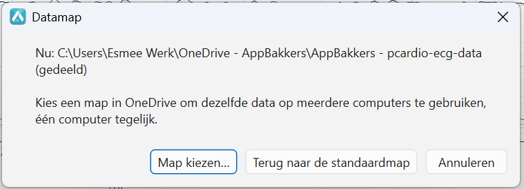
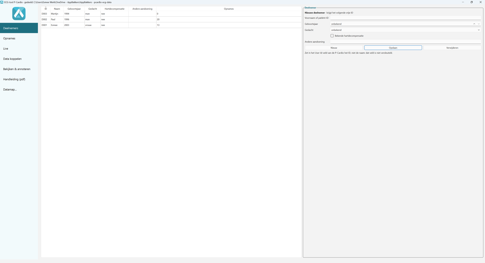
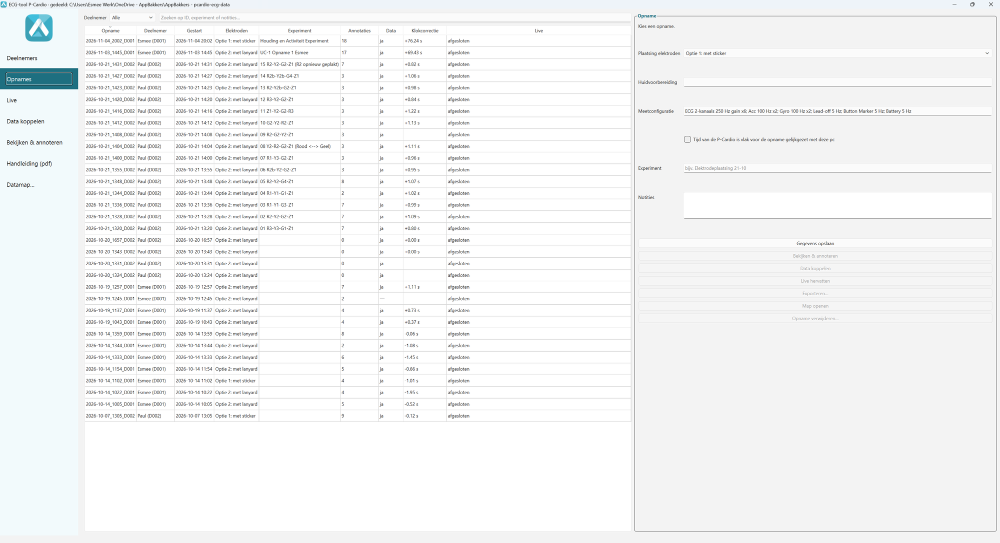
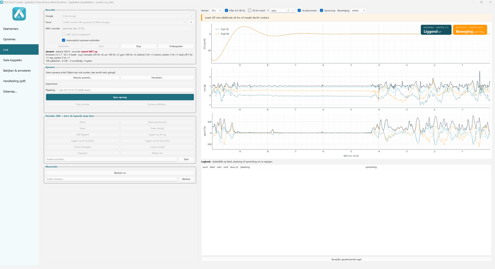
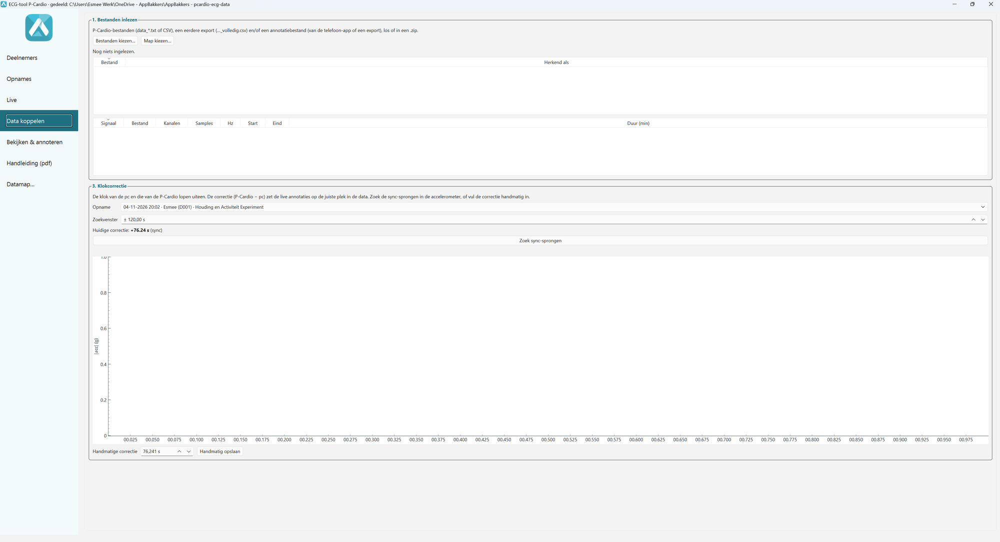
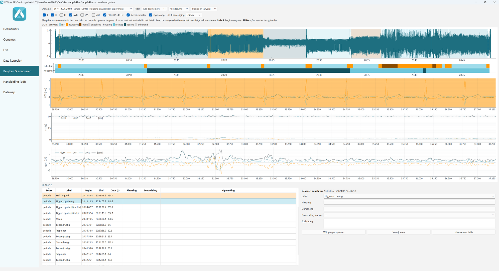

Desktop-app · versie 1.1 (9-11-2026) · AppBakkers, Secu-Sense WP4 · voor onderzoekers en zorgverleners. De pagina's hiervoor zijn de instructie voor de deelnemer.
|
Met de ECG-tool leg je deelnemers vast, volg je een opname met de P-Cardio live, houd je bij wat de deelnemer doet, koppel je na afloop de data van de recorder en bekijk en beoordeel je het ECG met de beweging eronder. Zo verloopt een opname
|
Sneltoetsen
Tip: bij bijna elk veld en elke knop staat uitleg als je er met de muis op blijft staan. |
 |
Dubbelklik op ECG-tool.cmd in de projectmap. Alle gegevens staan in één datamap (bovenin de titelbalk): de database ecg.db (deelnemers, opnames, annotaties) en per opname een map met de ruwe P-Cardio-bestanden en de signalen. Dezelfde data op meerdere computers (OneDrive of SharePoint)
De app werkt met een lokale kopie van de database en zet die bij afsluiten (en elke 10 minuten) in de gedeelde map. Werk op één computer tegelijk: anders meldt de app "In gebruik op … sinds …", en hij wacht tot OneDrive de laatste versie binnen heeft. Let op: de datamap bevat gezondheidsgegevens en namen: nooit in een persoonlijke Dropbox of Google Drive, en bewerk de bestanden erin niet met de hand. |
 |
Let op: zet in het User Id-veld van de P-Cardio het ID (bijv. D001), nooit de naam: dat veld wordt niet versleuteld. |
 |
|
 Wat je ziet
|
Verbinden
Onder de knoppen: batterij, of de recorder zelf opneemt, firmware en de tellers (pakketten, CRC-fouten, gaten). Staat er "neemt NIET op", houd dan de knop van de P-Cardio 1–3 s ingedrukt (lampje groen). Loggen tijdens een opname
Tip: kijken zonder te loggen kan ook: verbind en start zonder een opname te kiezen. |
 |
1. Bestanden inlezenKies de bestanden van de recorder (data_*.txt of de CSV-export van 2M), een eerdere export van deze app en/of een annotatiebestand van de telefoon-app; los, in een map of in een .zip. Met Bestanden toevoegen… voeg je ze één voor één toe, ook uit verschillende mappen (bijv. de .txt op de P-Cardio en de CSV van de telefoon); Lijst leegmaken begint opnieuw. De app herkent zelf wat wat is. 2. Koppelen aan een opnameDe app stelt de opname voor waarvan de live annotaties binnen de data vallen. Kies die (of Nieuwe opname) → Koppel. Heeft de opname al data of annotaties, dan vraagt de app eerst of die vervangen mogen worden. 3. KlokcorrectieDe klok van de pc en die van de P-Cardio lopen uiteen. Zoek sync-sprongen zoekt de landing in de accelerometer (stippellijn = gelogd moment, oranje = gevonden piek). Klopt het: Gebruik voorstel. Bij meerdere sync-sprongen neemt de app de mediaan, zodat één verkeerde klik het niet scheeftrekt.
|
 Een annotatie aanpassen of beoordelenKlik op een rij in de tabel: het venster springt erheen en de selectie staat op die annotatie. Versleep begin en eind, pas label, plaatsing of opmerking aan, kies een beoordeling van het signaal (schoon / ruis, QRS herkenbaar / onbruikbaar) en klik op Wijzigingen opslaan. Houd label (wat de deelnemer deed) en beoordeling (hoe het signaal eruitziet) bewust uit elkaar: lopen betekent niet automatisch een slecht signaal. |
Rondkijken
Annoteren
|
| Probleem | Oplossing | Probleem | Oplossing |
|---|---|---|---|
| Dongle niet gevonden | Andere USB-poort; de app zoekt elke paar seconden opnieuw (of ↻ naast Poort). | Houding "liggend" terwijl iemand zit | Zit de recorder scheef of een kwartslag gedraaid? Rechtop hoort bij ± 0–20°. |
| "Geen recorder gevonden" | Druk kort op de knop van de P-Cardio en verbind opnieuw. | "Zit de recorder ondersteboven?" | Draai de recorder om op de sticker. |
| Verbonden, maar geen plot | Klik op Start: verbinden start de stream nog niet. | "In gebruik op een andere computer" | Sluit de app daar af, wacht op OneDrive, Opnieuw proberen. |
| Venster "Fout in de ECG-tool" | Schermafdruk van de melding naar AppBakkers. | ||